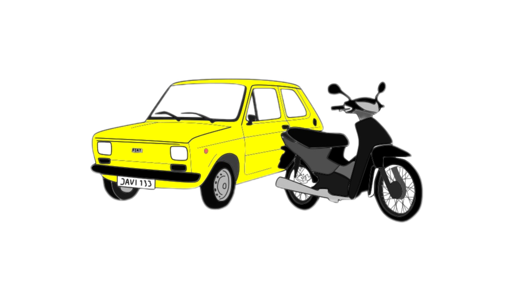
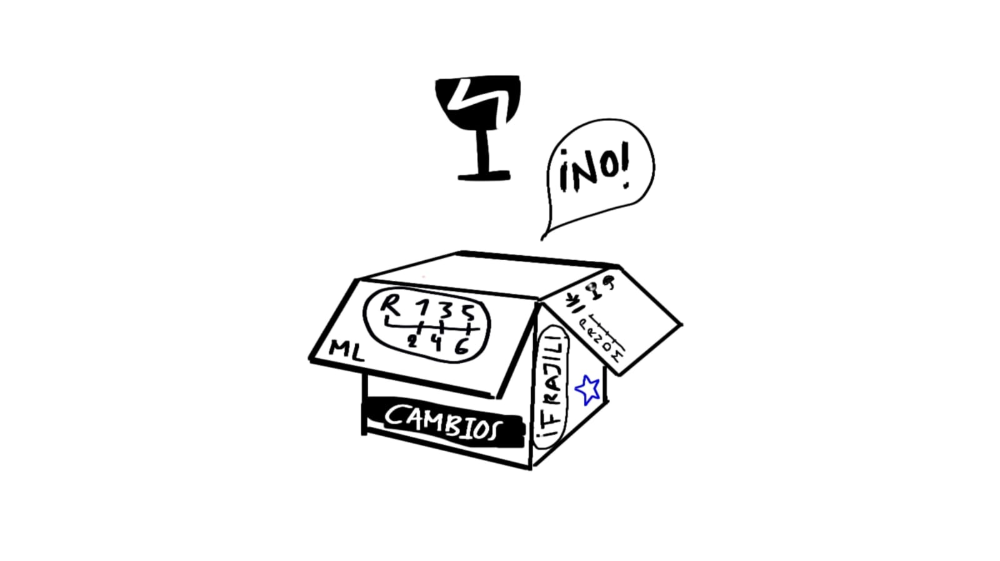
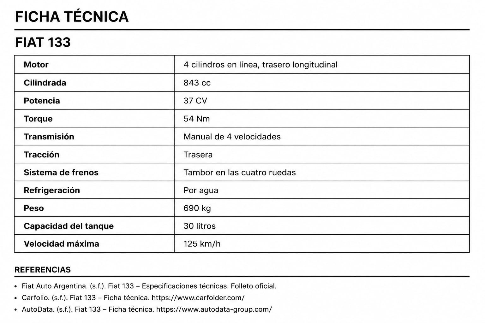

El Fiat que cambió todo: la primera aventura automovilística de Javi
ML- “Tenía apenas 17 años, no tenía mucha experiencia, pero sí algo claro: quería tener su propio auto.”25 mayo 2026 | 20:00 pm

Fiat 133 y Zanella-valtyna
Para muchos de nosotros el tener nuestro primer auto implica sacrificios, como ahorrar durante años, tener varios trabajos, pedir un préstamo al banco, entre otros. La historia de Javi empieza a los 17 años cuanto tomo una difícil decisión dejar atrás su Motocicleta Zanella Due 110 e ir tras su sueño de tener su primer auto. Cuando fijas un sueño difícilmente se sale de tu mente, para Javi el sueño de tener su primer auto no tenía limitantes, así tuviera factores en su contra como el no tener un registro y poca experiencia manejando.
Javi tenía que tomar una difícil decisión hacer el intercambio de su Zanella Due 110 por un Fiat 133. Aunque tuvo sus dudas, realizo el intercambio. Ahora les plantearía la pregunta ¿tú que elegirías la Zanella 110 o el Fiat133?
Afirma Javi “Durante la primera semana todo fue emoción. Salidas improvisadas, vueltas con amigos “. La sensación de libertad del primer coche es algo increíble que todos deberíamos experimentar, aunque era un auto de modelo antiguo, pequeño y sencillo. para su dueño era algo único y especial.
Como toda historia tiene sus contrastes positivos y negativos, aunque para Javi en esos momentos fue una mala decisión, ahora lo puede ver como un aprendizaje y una gran anécdota.
Al poco tiempo del intercambio, su auto empezó a presentar fallas mecánicas importantes y al final termina dañándose la caja de cambios, y sin dinero, con pocas posibilidades de repararlo el decidió que lo mejor que podría hacer en ese momento era vender su auto por partes. El primer auto puede que no sea el más rápido, nuevo o fiable de lo que si estamos seguros es que va a crear momentos y recuerdos inolvidables.

Caja de cambios- ML(valtyna)
¿Qué es la caja de cambios, y que ocurre cuando esta se daña?
La caja de cambios es una de las piezas más importantes de cualquier vehículo. Su función es transmitir la potencia del motor hacia las ruedas mediante diferentes marchas o velocidades, permitiendo que el coche avance correctamente y adapte su fuerza según la situación. (RO-DES, s. f.)
Para identificar si la caja de cambios está fallando debemos prestar atención a síntomas como dificultad para meter los cambios, ruidos metálicos, vibraciones, perdidas de potencia e incluso cuando el auto deja de moverse puede ser a causa de esto. Reparar una caja de cambios suele salir costoso y en especial en modelos antiguos porque sus partes no se encuentran fácilmente. por esa razón muchas personas optan en vender el vehículo.
Concejos para comprar tu primer auto
Para comprar un vehículo usado se tiene que tener en cuenta varias cosas, en primer lugar, debes mirar cuanto kilometraje tiene. Lo normal es que un carro tenga máximo 10.000 kilómetros por año, es decir si tiene 5 años de uso debería tener aproximadamente 50.000km, si tiene más de ese kilometraje entonces el precio del auto empieza a bajar con respecto a los autos del mismo modelo, también se debe hacer un peritaje eso lo hacen el centro técnico de seguros, Ellos revisan si el vehículo está funcionando bien. Adicionalmente miran en las bases de datos de todas las aseguradoras para ver si el auto tuvo un accidente, o si es un auto robado, revisan que el número del chasis corresponda al auto. (Juan Sanchez)
